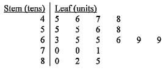

統計學 · 莖葉圖、四分位數與標準分

$$45,46,47,48;\ 55,55,56,58;\ 63,65,65,66,69,69;\ 70,70,71;\ 80,82,85$$
共 $20$ 個數據，最高分為 $85$ 分，即 Ada 得 $85$ 分。
$$\frac{3(21)}{4}=15.75$$
第 $15$ 及第 $16$ 個數據都是 $70$，故 $Q_{3}=70$ 分，不是 $55$ 分。I 錯。
$$\sum x=1265\ \Rightarrow\ \bar{x}=63.25$$
$$\sum x^{2}=82\,691\ \Rightarrow\ \sigma=\sqrt{\frac{82\,691}{20}-63.25^{2}}\approx11.6$$
Ada 的標準分：
$$z=\frac{85-63.25}{11.6}\approx1.88 \lt 2$$
II 正確。
標準差約為 $11.6$ 分，小於 $12$ 分，III 錯。
只有 II 正確，答案為 B。